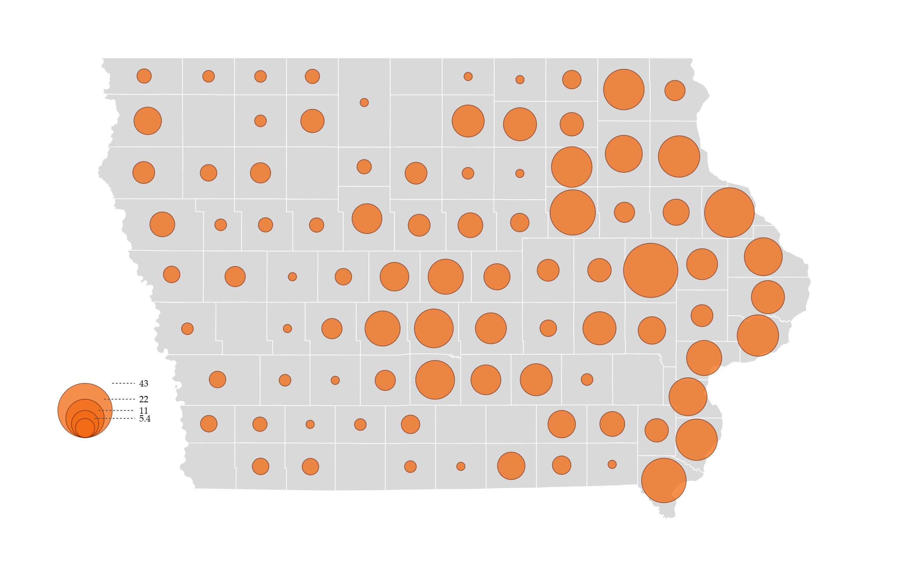
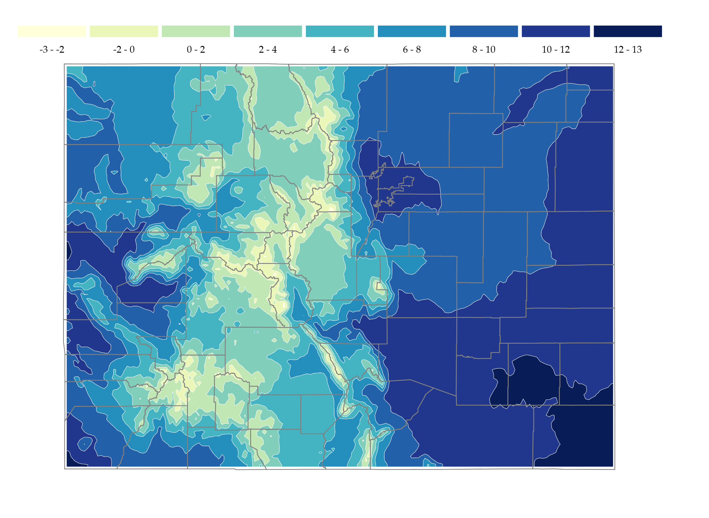

Choropleth Mapping

This project uses choropleth mapping to show how a selected variable varies across geographic areas. The map emphasizes spatial patterns using graduated color shading.
Welcome to my geovisualization portfolio. This website presents selected mapping assignments completed for GEOG 3540. The projects demonstrate different cartographic techniques, including choropleth mapping, point symbol mapping, isarithmic mapping, bivariate mapping, and flow mapping.
The projects were developed using HTML, CSS, JavaScript, Observable, FlowMapper, and other cartographic visualization tools.
This project uses choropleth mapping to show how a selected variable varies across geographic areas. The map emphasizes spatial patterns using graduated color shading.

This project uses point symbols to represent geographic data at specific locations. Symbol size and/or color are used to communicate differences in attribute values.

This project explores isarithmic mapping, which represents continuous spatial phenomena using isolines or smooth surface patterns.

This project uses bivariate mapping to show the relationship between two variables in the same map. The design helps compare spatial patterns across both variables.

This project uses FlowMapper to visualize internal migration flows in Rwanda in 2010. Line thickness represents migration volume between administrative units.